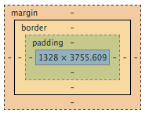

RailsBridge 前端課程
完全新手指南
投影片短網址：http://goo.gl/FJk7mh
使用reveal.js 製作，以 GitHub Pages 呈現
動手做
今天帶了電腦就來玩吧

Agenda
| 9:30 - 12:30 | 介紹 HTML, CSS, DevTool |
| 12:30 - 14: 00 | 午餐 |
| 14:00~ | 下載起始檔案，開始動手做 |
| 16:30 | 大家分享自己的作品 |
| 17:00 | 結尾 (介紹 JS, 學習資源) |
| 拍照 賦歸 |
今天會用到的...
- 瀏覽器 - Chrome
- 文字編輯器 - sublime Text
今天玩什麼
- HTML - 網頁結構
- CSS - 調整排版與樣式
- Javascript - 互動
What is HTML?
Hyper-Text Markup Language
超文件標示語言
「網頁建立和其它可在網頁瀏覽器中看到的資訊」(Wiki)
Hello World!
- 開始之前，先確認大家的環境
- 瀏覽器 - Chrome
- 文字編輯器 - Submline Text 3
- Let's coding!
- Sublime Text 指令
- Demo 1 Hello World
HTML Tag
Tag 用來決定文字代表什麼
巢狀結構
Hi, I am Pei
Hi, I am Pei
常見 HTML tag (part 1)
| Tag | Purpose |
|---|---|
| a | A link (the 'a' stands for Anchor) |
| h1-h6 | Various headers, h1 is the most important, h6 the least. |
| ul | Start a bulleted list (an 'unordered list') |
| ol | Start a numbered list (an 'ordered list') |
| li | A single thing within a list (a 'list item') |
常見 HTML tag (part 2)
| Tag | Purpose |
|---|---|
| table, tr, td | You can make tables (like this one) with table rows and data cells |
| form | A form that can collect data from user input |
| input | A text input, a button, or a checkbox in a form |
| div | A section marker that doesn't do anything specific to the contents itself, but does make a new line after. |
| span | Another section marker that doesn't do anything to its contents, but is inline - it does not make a new line after. |
HTML 頁面結構
doctype, head, body
HTML5 語意標籤
| Tag | Purpose |
|---|---|
| section | A section of a document |
| nav | A navigation section |
| header | The header for a page. (This is different from the head element, which contains metadata about the page!) |
| footer | The footer for a page |
| main | The important content on a page |
| aside | Content not essential to the main content |
CSS
Cascading StyleSheets - 階層式樣式表
提供樣式
CSS selector

padding 是什麼？

CSS reference
使用時可搭配 Can I Use 查詢瀏覽器支援
HTML 屬性 (Attributes)
提供 tag 額外資訊，例如不同的表單輸入
表單
男生
女生
嗜好：閱讀 音樂 電影
男生 女生
嗜好：閱讀 音樂 電影
class & id
給 tag 名字，根據這些名字來寫 css
特定 tag -> id
一群 tag -> class
DevTool
直接打開瀏覽器吧
打開方式：
- 右鍵 -> 檢查元素
- 上方選單 -> 檢視 -> 開發人員選項 -> 開發人員工具
- 右上三條線 "漢堡" 選單 -> 更多工具 -> 開發人員工具
- 快捷鍵： Windows: Crtl + Shift + I, MAC: Cmd + Opt + I
參考資料
製作頁面
下載 起始檔案
確認可以在瀏覽器開啟
添加資訊
- 填入內容
- 加入圖片 (img tag)
- 添加連結頁面內跳轉或者外連 (anchor tag)
頁面分欄
http://zh-tw.learnlayout.com/toc.html
float
column 寬度設定
增加互動
使用javascript
javascript - jQuery library
- 跨瀏覽器支援
- selector 語法和 css 類似
- 提供 animation, hide...等多種 function，加速開發流程
- 網路上資源豐富
- Demo 7 - jQuery vs native Javascript
javascript - native javascript
- 不需要額外載入 Library
- 注意瀏覽器支援
學習資源
- Listed Resources on RailsBridge
- Rails Girls Weekly - 從零開始的網頁設計- HTML & CSS基礎建設 影片 (影片下方有共筆)
- 學習 CSS 版面配置
- CSS Diner - 從餐桌上學 CSS
- computer science learning resource 電腦科學學習資源
- W3 Schools 教學
- Web Fundamentals - Best practices for great multi-device web experiences
- 用 HTML + CSS 畫多啦 A 夢
- 如何用 CSS3 畫愛心 動畫版,(保哥做的可用滑鼠單擊暫停版)
- 開發時的參考資料
實體和線上活動
Conference
Modern Web Conf (2015/5/15-16), JSDC (2015 下半年)...
社群／聚會
javascript.tw, Front-End Developers Taiwan, HTML5與CSS3在台灣, 幾乎所有 JS fraomework 都有 FB group, 可以到各社群頁面參與討論和參加活動
Sublime Text 基本指令
- 開新檔案：Crtl + N / Cmd + N
- Crtl+ O 開啟檔案 / Cmd + N 開啟....
(window上 開始檔案和開啟資料夾是分開選項
mac上 是同一選項 - 使用開起...) - Crtl + S / Cmd + S 儲存
- Sublime Text 手冊
Set Syntax (程式碼著色等) - Crtl + Shift + P / Cmd + Shift + P or View -> Syntax -> 選擇語言